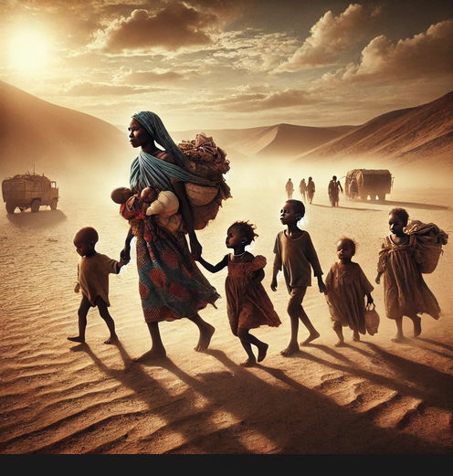

Sudan's Humanitarian Crisis: A Nation on the Brink of Collapse

For more than a year, Sudan has been engulfed in a brutal and unrelenting conflict that has torn the nation apart, leaving it teetering on the edge of collapse. Rival factions within the Sudanese armed forces have plunged the country into chaos, and the resulting violence has sparked one of the worst humanitarian crises the world has witnessed in recent history. Millions of Sudanese citizens are now caught in a living nightmare, trapped in a relentless cycle of violence, displacement, and starvation. The country's farmlands lie in ruins, supply routes have been cut off, and essential services such as healthcare and sanitation have all but disappeared, leaving millions at risk of famine.
As international aid efforts struggle to reach those most in need, the humanitarian disaster continues to deepen. Children, women, and the elderly, the most vulnerable in society, are bearing the brunt of the suffering, and without immediate intervention, countless lives could be lost. Now, more than ever, the world must respond. The crisis in Sudan demands urgent action, international attention, and a global commitment to help those whose lives hang in the balance.
The Scale of the Catastrophe: A Nation in Freefall
Sudan's civil war has shattered its social fabric, leaving families displaced, communities destroyed, and livelihoods obliterated. According to recent estimates, more than 4.3 million people have been displaced by the conflict, and this number is expected to rise sharply as the violence persists. Large swathes of farmland, once the backbone of Sudan's economy and food security, have been laid to waste, pushing more than 12 million people into a state of emergency where food and clean water are scarce. The United Nations has warned that the nation is now on the verge of famine, with over 18 million people - nearly half of Sudan's population - facing acute food insecurity.
The breakdown of essential services such as healthcare, clean water, and sanitation has accelerated the spread of diseases like cholera, measles, and malaria. In the absence of functioning hospitals, thousands are left without medical attention, and malnutrition rates are skyrocketing, especially among children. The situation is especially dire in conflict zones where access to humanitarian aid has been severely restricted, leaving millions of Sudanese stranded and without hope. This unfolding catastrophe demands global attention and an immediate response to save lives.
Sudan's Delapidated Hospital in Chakadum, where the dead and the living both share beds
The Human Toll: Stories of Desperation and Resilience
Behind the numbers and statistics lie the personal stories of those affected by the violence, stories that speak to the resilience of the human spirit in the face of unimaginable hardship. Fatima, a mother of six, was forced to flee her village in Darfur after it was razed by rival militias. Her family walked for days under the scorching desert sun, with little food or water, hoping to find safety in a nearby refugee camp. "We left everything behind," she recalls. "My children are starving, but there is nowhere to go. No one is coming to help us."

Fatima and her children walk through the unforgiving desert, carrying
the weight of displacement and uncertainty. Their journey, marked by
hunger and exhaustion, is a testament to the resilience of those fleeing violence.
Mohammed, a 12-year-old boy from Khartoum, witnessed his father's death at the hands of armed forces. Now, as a refugee in Chad, he struggles to care for his younger siblings. "I am afraid every day," he says, his voice trembling. "We don't have food or a place to sleep. We need help, but no one is coming." These are the voices of Sudan - voices crying out for help, for peace, and for a future free from the horrors of war.
A young boy, Mohammed, stands in a refugee camp with his siblings,
reflecting the resilience of children amidst the hardships of war.
Despite the overwhelming adversity, there are also glimmers of hope. Local communities are coming together to support one another, sharing what little resources they have. Women are forming groups to cook communal meals and care for children, and young people are volunteering to transport the sick and elderly to makeshift clinics. But these grassroots efforts are not enough. They are struggling under the weight of a crisis too large for any one community to bear. Without substantial international support, these efforts will falter, and the consequences could be catastrophic.
The Call to Action: How You Can Make a Difference
Sudan's humanitarian crisis has reached a critical tipping point. While governments and international organizations have provided some assistance, it is far from enough to meet the escalating needs. The situation requires an immediate and comprehensive global response, with compassionate individuals, organizations, and donors playing a pivotal role in alleviating the suffering of millions. Here's how you can help:
- Financial Donations: The most effective way to contribute to relief efforts is through monetary donations. Your donations can provide emergency food, clean water, shelter, and medical supplies to families in desperate need. A donation of $100 can supply a family of five with essential food and water for a month, while $500 can fund a mobile clinic that offers critical healthcare services to remote areas for a week. By contributing $5,000, you can help provide emergency shelter and sanitation facilities to hundreds of displaced families.
- Sponsorship for Aid Deliveries: With supply routes cut off by the conflict, delivering aid to the hardest-hit regions is a monumental challenge. You can sponsor the transport of food, medical supplies, and clean water to isolated communities. Each $10,000 donation can help fund the delivery of 100 tons of life-saving supplies, ensuring that aid reaches those who need it most.
- Medical Assistance: The health system in Sudan is collapsing, and millions are without access to basic healthcare. You can contribute to medical relief efforts by sponsoring field hospitals and mobile medical teams. A donation of $50,000 could equip a field hospital with the necessary resources to serve 10,000 people over the course of three months, providing essential treatments for malnutrition, infections, and trauma care.
- Sustainable Solutions: While immediate relief is crucial, the long-term recovery of Sudan will depend on rebuilding its agricultural sector and restoring livelihoods. By donating towards agricultural projects and vocational training, you can help displaced families rebuild their lives. $15,000 could fund an agricultural project that provides seeds, tools, and training to 500 farmers, helping them grow food for their communities and move towards self-sufficiency.
- Advocacy and Awareness: If you are unable to contribute financially, you can still make a difference by raising awareness about the crisis in Sudan. Use your platforms to share the stories of those affected, amplify the voices of Sudanese refugees, and push for global action. Every shared post, every conversation, and every signature on a petition can help mobilize international attention and pressure governments to act.
Donation Projections: Making a Lifesaving Impact
Our goal is to raise $5 million over the next six months to provide life-saving assistance to the most vulnerable populations in Sudan. Here's how your contributions can make a difference:
- $100,000: Provides emergency food and water supplies to 10,000 families for a month.
- $250,000: Funds mobile medical clinics that serve 50,000 people in remote areas for three months.
- $1 million: Ensures the delivery of 1,000 tons of aid supplies to the hardest-to-reach conflict zones, including medicine, food, and clean water.
- $5 million: A comprehensive intervention providing emergency relief, healthcare, and long-term recovery efforts, benefiting over 500,000 people in Sudan.
The Road Ahead: Hope Through Collective Action
The situation in Sudan may seem insurmountable, but through collective action, we can bring hope to millions of people suffering from the violence and devastation. Every donation, every act of advocacy, and every gesture of solidarity counts. Together, we can provide the urgent relief needed to save lives and lay the foundation for long-term recovery and peace.
The people of Sudan have shown immense courage in the face of unimaginable hardship, but they cannot endure this crisis alone. It is up to all of us - global citizens, organizations, and governments - to step forward and take action. By offering your support today, you can help ease the suffering of millions, restore dignity to displaced families, and give Sudan a fighting chance for a peaceful and prosperous future.
Your Donation Will Make a Huge Difference. Become a part of the global movement to save lives in Sudan.
Donate Now